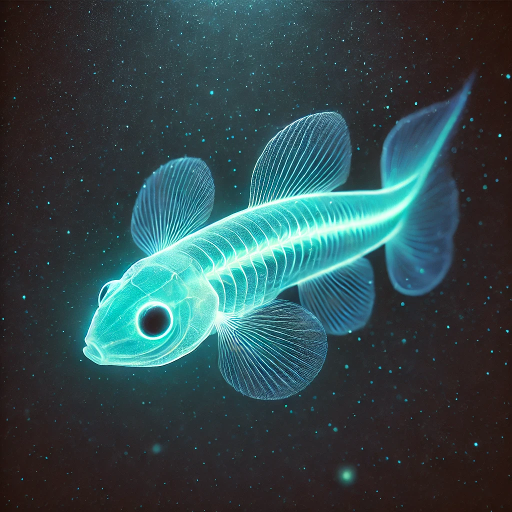

Lucas Monteiro
Uma equipe de biólogos marinhos anunciou a descoberta de uma nova espécie de peixe-luminescente nas profundezas do Oceano Pacífico. O animal, batizado de Luminichthys profundis, emite um brilho azul-esverdeado para atrair presas e se comunicar com outros membros da espécie.
A descoberta ocorreu a mais de 2.000 metros de profundidade, onde a luz solar não chega. O peixe tem cerca de 15 centímetros de comprimento e apresenta uma pele translúcida, permitindo que seu brilho natural se destaque no ambiente escuro. Os cientistas acreditam que essa bioluminescência pode ser uma estratégia evolutiva para sobrevivência em um habitat extremo.
A expedição, liderada pelo Instituto de Pesquisas Marinhas GlobalBlue, utilizou um veículo subaquático não tripulado para explorar as zonas abissais do oceano. Durante a missão, câmeras de alta resolução captaram imagens do misterioso peixe emitindo pulsos de luz em meio à escuridão.
“Foi um momento emocionante. A bioluminescência é um fenômeno fascinante, e encontrar uma espécie desconhecida que a utiliza de forma tão eficiente nos ajuda a entender melhor a vida nas profundezas do oceano”, explicou a Dra. Renata Oliveira, pesquisadora-chefe da equipe.
A descoberta do Luminichthys profundis traz implicações importantes para a biologia marinha e a conservação dos ecossistemas profundos.
Leia Também
-
Cientistas desenvolveram um novo material autorreparável baseado na regeneração da pele humana. Feito de polímeros e nanopartículas, ele pode se reconstruir sozinho após danos, reagindo ao calor ou à luz. Esse avanço pode revolucionar indústrias como eletrônica e aeroespacial, tornando dispositivos mais duráveis e sustentáveis. Os pesquisadores agora buscam aplicações práticas para essa tecnologia inovadora.
-
Cientistas desenvolveram uma bateria biodegradável feita de papel, utilizando nanotubos de carbono e polímeros orgânicos. O dispositivo pode alimentar pequenos eletrônicos antes de se decompor naturalmente, reduzindo o impacto ambiental das baterias convencionais. Agora, os pesquisadores trabalham para aprimorar sua eficiência energética e viabilizar sua produção em larga escala.
Pesquisadores desenvolveram um vidro ultra-resistente baseado na estrutura da madrepérola das conchas marinhas. Esse material inovador é até cinco vezes mais durável que o vidro comum, mantendo total transparência. Ele pode ser aplicado em telas de celulares, janelas e veículos, aumentando a resistência contra impactos. Os cientistas agora estudam sua viabilidade para produção em larga escala.
Cientistas desenvolveram um plástico biodegradável que se decompõe em poucos dias quando exposto à água e microrganismos naturais. Feito de biopolímeros derivados de amido e celulose, o material mantém a resistência do plástico comum, mas sem causar poluição. A inovação pode ajudar a reduzir o lixo plástico em oceanos e aterros, e os pesquisadores agora buscam parcerias para viabilizar sua produção em larga escala.
-